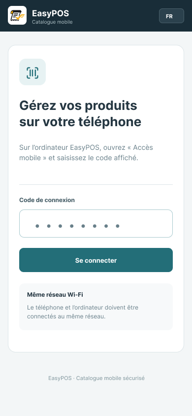
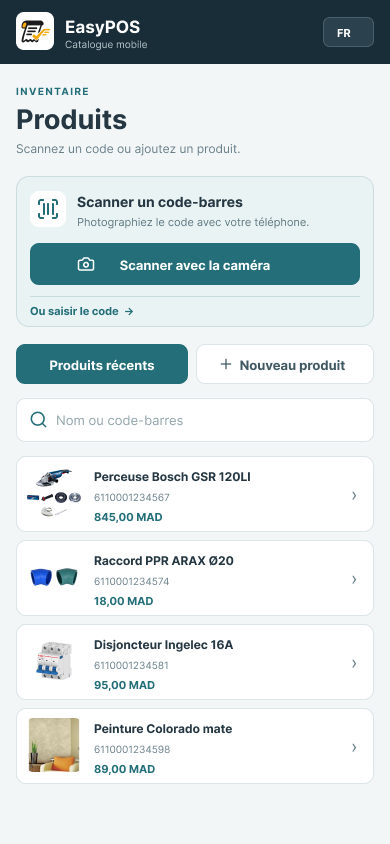
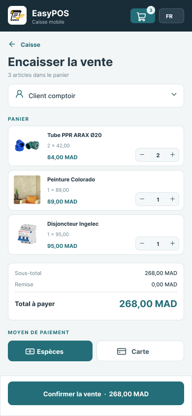

Un PC Windows x64 pour installer EasyPOS et conserver les données de la boutique.
GUIDE EASYPOS
De l'installation
à la première vente.
Suivez les étapes dans l'ordre, ou ouvrez directement la fonction dont vous avez besoin. Les captures montrent des données de démonstration et les maquettes récentes de l'interface.
Ce qu'il vous faut
Un téléphone avec navigateur et appareil photo, connecté au même réseau Wi-Fi que le PC.
Un lecteur de codes-barres pour accélérer la saisie et une imprimante pour les tickets ou planches PDF.
Internet pour télécharger EasyPOS et ses mises à jour. Les ventes sur le PC utilisent les données locales.
Depuis le code source
Le workflow du projet utilise Node.js 22 et npm. Les commandes de développement sont plus bas dans ce guide.
Installer et configurer
- Téléchargez la dernière version
Ouvrez GitHub Releases et choisissez
EasyPOS-Setup-…-x64.exe. Lancez l'installateur Windows. - Connectez-vous
La première installation crée le compte
adminavec le mot de passeadmin. Changez immédiatement ce mot de passe dans la gestion des utilisateurs. - Définissez la boutique
Renseignez le nom, l'adresse, la devise et les informations du ticket. La TVA et le mode d'encaissement se règlent dans les paramètres avancés.
- Faites une première sauvegarde
Dans Paramètres → Données & sauvegardes, cliquez sur Créer une sauvegarde ZIP et gardez le fichier hors du PC.
Si vous passez d'un ancien installateur Forge/Squirrel à EasyPOS NSIS, faites une sauvegarde avant l'installation. Le nom interne du dossier de données reste PharmaSpot.
Créer et retrouver un produit
Commencez par une catégorie, puis enregistrez un produit avec un nom facile à reconnaître. La photo et le code-barres rendent la vente plus rapide.
- Créez une catégorie
Ouvrez Catégories → Nouvelle catégorie, par exemple « Plomberie » ou « Peinture ».
- Ajoutez le produit
Dans Catalogue → Ajouter un produit, saisissez nom, catégorie, prix de vente et stock initial. Ajoutez le fournisseur, la photo et le code-barres si vous les avez.
- Vérifiez la fiche
Retrouvez le produit par nom ou code-barres. Ouvrez sa fiche pour contrôler le prix, le stock et les informations enregistrées.

Catalogue portable
Vous pouvez aussi importer un catalogue ZIP avec images depuis Paramètres → Données & sauvegardes. Vérifiez les prix avant de vendre.
Encaisser une vente
La caisse montre les photos, les prix et les catégories. Le panier reste accessible dans l'en-tête pendant la recherche.

- Recherchez ou scannez
Dans Caisse, saisissez le nom ou le code-barres, utilisez un filtre de catégorie ou scannez avec un lecteur connecté.
- Ajoutez au panier
Cliquez sur la carte produit. Ouvrez Panier dans l'en-tête pour contrôler les quantités et choisir un client si nécessaire.
- Choisissez le paiement
Vérifiez le total, sélectionnez espèces ou carte, puis cliquez sur Confirmer la vente. Pour les espèces, indiquez le montant reçu afin de voir la monnaie à rendre.
- Consultez le résultat
La vente payée apparaît dans Ventes & rapports. Vous pouvez imprimer le ticket et vérifier la nouvelle quantité dans Stock.
Le stock diminue quand une vente payée est enregistrée. Les ventes en attente ne sont pas déduites à ce stade.
Suivre les entrées et sorties
Réception fournisseur
Créez ou sélectionnez un fournisseur, ajoutez les produits reçus et leurs quantités, puis confirmez la réception. Les quantités augmentent et un mouvement est conservé.
Ajustement et contrôle
Dans Stock, consultez les mouvements récents et les articles à réapprovisionner. Utilisez l'ajustement pour corriger un comptage physique.
Ajouter et vendre depuis le mobile
EasyPOS démarre un accès mobile local avec un code de connexion temporaire. Le PC doit rester allumé avec EasyPOS ouvert.
- Connectez les appareils
Mettez le PC et le téléphone sur le même Wi-Fi privé. Cliquez sur Accès mobile dans l'en-tête du PC.
- Ouvrez l'adresse
Sur le téléphone, ouvrez l'adresse indiquée et entrez le code à huit chiffres. Il change à chaque redémarrage du PC.
- Photographiez le code-barres
Dans le catalogue mobile, choisissez Scanner avec la caméra. Une photo ouvre le produit existant ou le formulaire d'un nouveau produit. Le code peut aussi être saisi.
- Utilisez la caisse mobile
Ouvrez Caisse, ajoutez les produits, vérifiez le panier et confirmez le paiement. Le serveur vérifie prix et stock actuels.



Sur cette adresse HTTP locale, la caméra utilise une photo, pas un flux vidéo continu. Utilisez un Wi-Fi de confiance : la connexion locale n'est pas chiffrée.
Préparer une planche PDF
- Ouvrez le catalogue
Recherchez les articles qui n'ont pas d'étiquette à scanner.
- Sélectionnez les produits
Cochez uniquement les produits à imprimer dans la liste.
- Exportez le PDF
Cliquez sur Exporter les codes-barres PDF. Chaque étiquette porte le nom, le code-barres et le code lisible dessous.
Vérifiez la planche à l'écran avant impression et testez un code avec votre lecteur.
Sauvegarder et mettre à jour
Sauvegarde
Dans Paramètres → Données & sauvegardes, créez une sauvegarde ZIP. Elle transfère la base et les images. La restauration remplace les données locales après confirmation : gardez une copie du fichier actuel.
Mises à jour
Dans une copie installée, ouvrez Paramètres → Mises à jour puis Vérifier. Quand le téléchargement est prêt, choisissez Installer et redémarrer. Les copies lancées depuis le code source ne se mettent pas à jour automatiquement.
Exécuter le projet localement
Pour contribuer ou tester le code, utilisez Node.js 22 et npm sur Windows. Clonez le dépôt, puis lancez ces commandes dans le dossier du projet :
npm ci
npm test
npm run startLe nom interne PharmaSpot conserve la compatibilité du dossier de données. Le site est dans website/ et les tests dans test/ et tests/.
Si quelque chose bloque
Le téléphone ne trouve pas EasyPOS
Vérifiez que les deux appareils sont sur le même réseau, que le PC est allumé et qu'EasyPOS est ouvert. Si nécessaire, autorisez EasyPOS ou le port TCP 3211 sur le réseau privé dans le pare-feu Windows.
Le scan ne lit pas le code
Rapprochez le téléphone, améliorez l'éclairage et gardez le code net. Vous pouvez saisir le numéro manuellement.
Le produit n'est pas visible à la caisse
Vérifiez le filtre de catégorie, la recherche et la pagination. Ouvrez sa fiche pour confirmer nom, prix et quantité.
Une vente ne se confirme pas
Vérifiez le montant payé et le stock. Le serveur refuse une vente dont le paiement ne couvre pas le total ou dont le stock suivi est insuffisant.
Prêt à essayer EasyPOS ?
Téléchargez la dernière version, puis suivez les étapes de ce guide sur votre première installation.
Télécharger pour Windows ↗